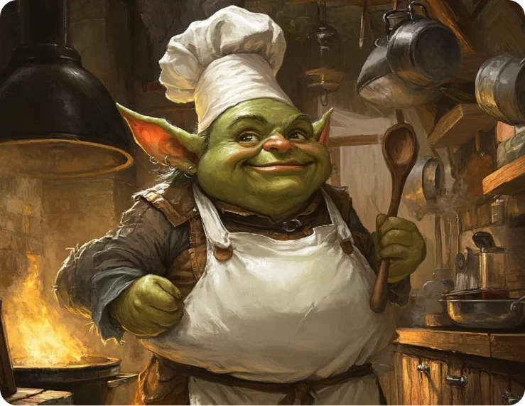

About the Chef
Glorf
Glorf's Story
Glorf has never fit in with the rest of goblin-kind. While his kin reveled in raiding, pillaging, and feasting on raw meat and rotten fruit, Glorf yearned for something different. He despised the brutality and lack of appreciiation for good food that characterized the average goblin life. His dream was to see goblins living in harmony with other races, enjoying refined dishes that brought people together instead of driving them apart.
Unfortunately, such thoughts were considered treasonous in goblin society. One day, while expressing his wish for peace and better cuisine, he was overheard by the tribe's chief and sentenced to death for his "stupid" views. The night before his execution, Glorf was given the grim task of preparing his own final meal. Resigned, he poured his heart and soul into creating “Glorf's Glorious Stew”, a dish so aromatic and rich that the goblin guard on duty couldn't help but salivate at its scent.
Impressed by Glorf's culinary genius, the goblin guard intervened, convincing the tribe's chief to spare Glorf's life and make him the Drek'Tar Goblin Camp's official cook. From that day forward, Glorf was given a second chance, and he embraced it! He began experimenting with new ingredients and found inspiration in the cuisines of other races—the very people goblins despised.
Disguised in raggs and cloaks, Glorf would secretly barter with humans, elves, and dwarves, trading his freshly prepared goblin dishes for samples of their recipes. He experimented relentlessly, recreating and perfecting dishes like “Elven Moonberry Tart” and “Dwarven Stone Stew,” blending his own goblin twist with the classic flavors of these cultures. Over time, Glorf's skills and waistline grew as he spent countless hours perfecting his craft.
One fateful day, the Drek'Tar Camp was on the brink of annihilation. A dwarven army, known for their fierce hatred of goblins, was seen marching toward the camp. Chaos erupted as goblins began fleeing, abandoning the camp. Goblins are not very brave. But Glorf stood his ground. With the help of a few loyal sous-chefs, he prepared a grand feast featuring his new “Dwarven Stone Stew” and a vat of “Fire-Brandy Mead” that he had learned to make.
As the dwarven army drew closer, Glorf and his team wheeled out the feast, risking their lives in the process. The dwarves were stunned by the unexpected gesture and, after much hesitation and testing for poison, they tasted the food. The aroma, texture, and flavor took them by surprise. The dwarven general, Balin Stormstout, burst into hearty laughter, declaring that no goblin who could create such dishes should be their enemy.
From that day forward, the Drek'Tar Camp was spared on one condition: they must renounce violence and Glorf must remain the camp's leader and chef. Now titled the “Chief and Chef of Drek'Tar,” Glorf has changed the once hostile goblin camp into a culinary haven where all can learn how to cook. While other races remain wary, the dwarves have become Glorf's closest allies and most devoted patrons.
Glorf has taken the time to write down his favorite recipes inside of his large tome that he has titled "Glorf's Grub Grimoire". He now shares it with the world via magic!